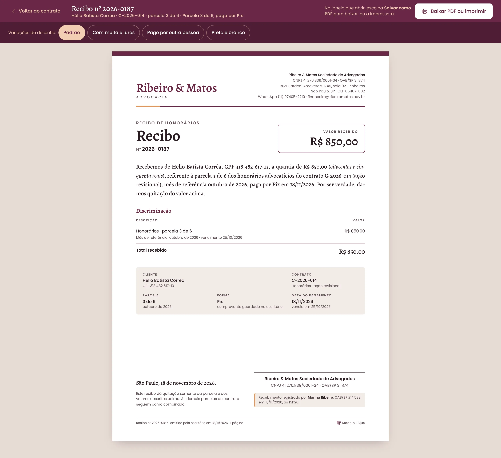
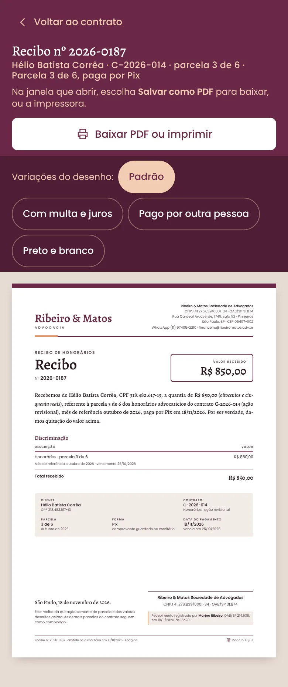

O recibo, padrão
A folha A4: timbrado do escritório (nome, razão social, CNPJ, registro na OAB, endereço, WhatsApp e e-mail), "Recibo nº 2026-0187", o valor em destaque, o texto "Recebemos de… a quantia de R$ 850,00 (oitocentos e cinquenta reais), referente à parcela 3 de 6… mês de referência outubro de 2026, paga por Pix em 18/11/2026", a discriminação, os dados do pagamento, cidade e data, a assinatura do escritório e quem registrou. O T3jus só no rodapé. Na tela, a barra vinho tem "Voltar ao contrato" e "Baixar PDF ou imprimir", e some na impressão.
Abrir: recibo-a4.html?estado=padrao